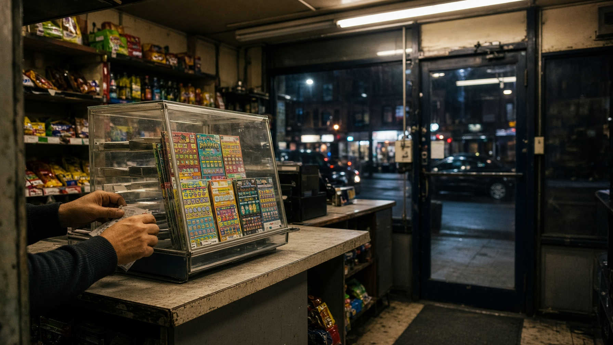

PocketPro Concierge
Ask about draws, training, suggestions, or errors.
New York Lottery workspace
Ask about Take 5, Pick 3, Powerball, Mega Millions, and the rest of the NYL slate. RAG grounds answers in ingested draw history.
Ask about draws, training, suggestions, or errors.

PocketPro:NYL ingests official draw history, trains models in the background, and answers through Concierge — cited to your Chroma store.
Take 5 through NY Lotto on one desk.
Post train, poll status. No ten-minute hang.